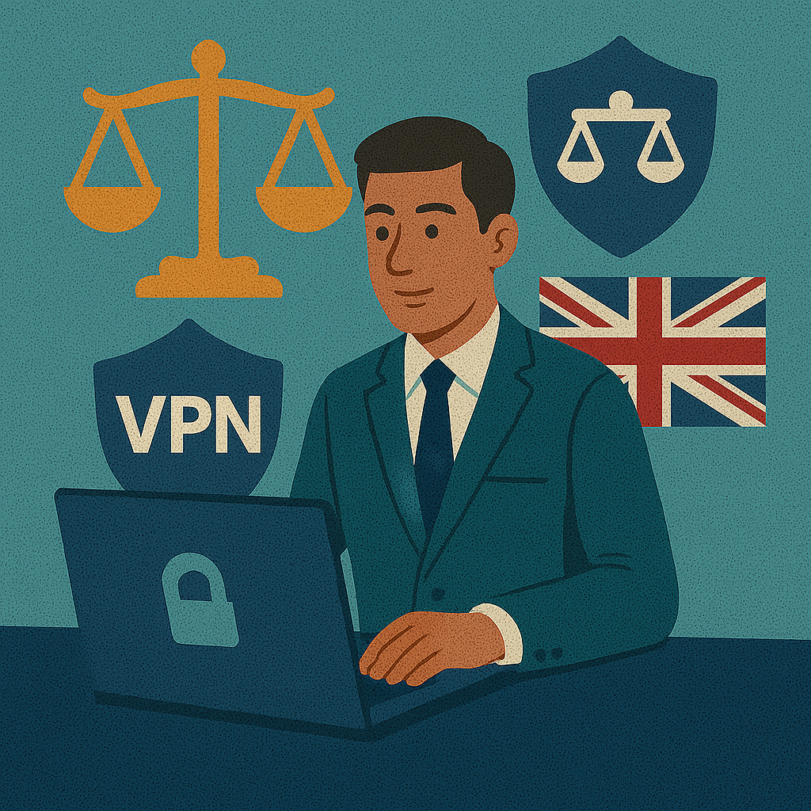

VPN-Router einrichten 2026: FRITZ!Box, Telekom & Vodafone Guide
Diese Anleitung ist für reale DACH-Anschlüsse gedacht: FRITZ!Box im Heimnetz, Telekom Speedport mit Kaskade, Vodafone Station mit möglichem Brücken-Modus und Anschlüsse mit DS-Lite, bei denen eine falsche Netzlogik mehr kaputtmacht als jedes Protokoll. Im deutschen Markt zählt vor allem eines: Datenschutz ohne Bastelchaos. Entscheidend ist nicht nur, ob der Router theoretisch VPN kann, sondern ob Sie die DNS-Lecks, die Topologie und die Regeln für Streaming und Gaming sauber zusammenbringen.
Kompatibilität prüfen ↓
Starten Sie mit dem Prüf-Widget, gehen Sie dann direkt zum passenden Anbieter-Abschnitt und mischen Sie Brücken-Modus, Kaskade und DS-Lite-Fixes nicht durcheinander.

FRITZ!Box: WireGuard nativ einrichten
Die FRITZ!Box ist die seltene Provider-nahe Hardware, die ohne zweiten Router sinnvoll arbeiten kann. Das gilt aber nur, wenn Fritz!OS aktuell genug ist und die Box die WireGuard-Funktion tatsächlich anbietet.
- Öffnen Sie die FRITZ!Box-Oberfläche und prüfen Sie die installierte Fritz!OS-Version.
- Aktualisieren Sie gegebenenfalls auf Fritz!OS 7.50 oder neuer.
- Gehen Sie zu Internet → Freigaben → VPN (WireGuard).
- Erstellen Sie eine neue WireGuard-Verbindung und exportieren Sie die Konfiguration.
- Testen Sie danach ein kabelgebundenes Gerät und führen Sie einen DNS-Leck-Test durch, bevor Sie das ganze Heimnetz umstellen.
FRITZ!Box WireGuard
Pfad: Internet → Freigaben → VPN (WireGuard)
Aktion: Neue WireGuard-Verbindung → Konfiguration exportieren
Port: UDP 51820Telekom Speedport: Kaskadenlösung
Beim Speedport führt der saubere Weg fast immer über eine Kaskade. Der Speedport bleibt WAN-Gateway, ein zweiter Router übernimmt Verschlüsselung, DNS und die Regeln für einzelne Geräte.
- Lassen Sie den Speedport als Anschlussgerät aktiv.
- Verbinden Sie den WAN-Port Ihres VPN-Routers mit einem LAN-Port des Speedport.
- Importieren Sie das WireGuard-Profil im zweiten Router.
- Testen Sie zuerst ein kabelgebundenes Gerät und danach WLAN-Geräte separat.
- Behalten Sie Gaming-Hardware möglichst außerhalb des Tunnels, wenn die Latenz kritisch ist; dafür lohnt sich ein Blick auf VPN für Gaming.
Telekom Kaskade
Speedport LAN → Ethernet → VPN-Router WAN
Panel Speedport: 192.168.2.1
WireGuard: UDP 51820Vodafone Station: Brücken-Modus
Vodafone kann der angenehmere Kabel-Fall sein — aber nur dort, wo der Brücken-Modus tatsächlich freigeschaltet ist. Wo er fehlt, bleibt am Ende ebenfalls die Kaskadenlösung.
- Melden Sie sich in MeinVodafone oder in der lokalen Oberfläche der Station an.
- Suchen Sie die Netzwerk-Einstellungen und aktivieren Sie den Brücken-Modus.
- Verbinden Sie den eigenen Router per WAN-Port.
- Importieren Sie das WireGuard-Profil und testen Sie die Verbindung zuerst per Ethernet.
- Prüfen Sie anschließend Streaming und DNS getrennt, statt beide Ebenen gleichzeitig zu verändern.
Vodafone Station Brücken-Modus
Login: 192.168.0.1 (oder MeinVodafone-App)
Pfad: Einstellungen → Netzwerk → Bridge-Mode: Aktivieren
WAN: Eigener Router erhält öffentliche IP direktO2 / Unitymedia: DS-Lite-Fix
DS-Lite ist kein Randproblem. Es ist oft die eigentliche Ursache dafür, dass Portweiterleitung, ältere VPN-Profile oder unklare Router-Fehler plötzlich instabil werden, obwohl die Leitung selbst schnell genug ist.
- Prüfen Sie, ob Ihr Anschluss überhaupt eine öffentliche IPv4 hat.
- Nutzen Sie WireGuard statt OpenVPN, wenn NAT-Traversal wichtig ist.
- Setzen Sie bei instabilen Tunneln den MTU-Wert probeweise auf 1280.
- Testen Sie zuerst ein einzelnes Gerät, bevor Sie das ganze Heimnetz umstellen.
DS-Lite Diagnose und MTU
Prüfen: keine öffentliche IPv4 vorhanden
Empfehlung: WireGuard über UDP
MTU-Fix: ip link set dev wg0 mtu 1280Österreich und Schweiz — Unterschiede im DACH-Raum
Österreich: A1 und Magenta
A1 Hybrid-Boxen und manche Magenta-Geräte arbeiten mit proprietären Modi, die direkten VPN-Betrieb erschweren. Praktisch läuft es oft auf DMZ oder Kaskade hinaus. Für dieselbe Hardwarelogik wie in Deutschland reicht das meistens aus; wer oft unterwegs arbeitet, sollte zusätzlich VPN auf Reisen berücksichtigen.
Schweiz: Swisscom und Sunrise
Schweizer Anschlüsse bieten teilweise extrem hohe Bandbreiten. Genau deshalb kollabieren schwache Router-CPUs hier besonders schnell. Sparen Sie hier nicht am Router: ältere Modelle werden sofort zum Flaschenhals. Für >1 Gbit/s lohnt sich leistungsstarke Hardware deutlich früher als in kleineren Heimnetzen.
| Router-Modell | Ideal für | ISP-Kompatibilität | WireGuard | OpenVPN | Merlin | Preis (2026) | Wo kaufen |
|---|---|---|---|---|---|---|---|
| AVM FRITZ!Box 7590 AX | Einsteiger / Telekom / Vodafone | Alle DE ISPs ✓ | ✓ nativ | ✓ | ✗ | ca. 220 € | Bei Amazon.de suchen |
| GL.iNet Flint 2 (AX3000) | Power-User / Swisscom CH | Alle ISPs ✓ | ✓ | ✓ | ✗ | ca. 160 € | Bei Amazon.de suchen |
| ASUS RT-AX86U Pro | Gamer / VPN Fusion | Alle ISPs ✓ | ✓ | ✓ | ✓ | ca. 240 € | Bei Amazon.de suchen |
| GL.iNet Beryl AX | Reisen / DS-Lite-Umgebungen | Alle ISPs ✓ | ✓ | ✓ | ✗ | ca. 80 € | Bei Amazon.de suchen |
| MikroTik hAP ax³ | Fortgeschrittene / pfSense | Alle ISPs ✓ | ✓ | ✓ | ✗ | ca. 130 € | Bei Amazon.de suchen |
Preise geprüft April 2026. WireGuard-Geschwindigkeiten beziehen sich auf den Router-Prozessor, nicht auf die ISP-Leitungsgeschwindigkeit. Tatsächliche Ergebnisse variieren je nach Firmware, Serverstandort und Auslastung.
Topologie im DACH-Raum: nativ, Kaskade oder Brücken-Modus
Im DACH-Raum gibt es drei praktikable Wege: native Einrichtung auf der FRITZ!Box, eine Kaskade mit Speedport oder Hybrid-Box und den Brücken-Modus auf kompatiblen Kabelgeräten. Die richtige Hand-off-Logik entscheidet über den Rest.
- FRITZ!Box kann WireGuard direkt ausführen und benötigt dann keinen zweiten Router.
- Telekom Speedport, A1 und ähnliche Geräte arbeiten am stabilsten in einer Kaskade mit eigenem VPN-Router.
- Vodafone Station kann dort, wo verfügbar, in den Brücken-Modus wechseln und damit den saubersten Übergabepunkt liefern.
- Erst nach der richtigen Übergabelogik sollten DNS, Streaming-Regeln und Gaming-Ausnahmen angepasst werden.
WireGuard vs. OpenVPN — deutsche Realität
Auf deutschen 1-Gbit/s-Anschlüssen ist die Protokollfrage in Wahrheit oft eine CPU-Frage. Bevor Sie neue Hardware kaufen, sollten Sie zuerst VPN-Protokolle vergleichen und prüfen, ob nicht einfach der Router selbst zum Flaschenhals geworden ist.
Fazit: Wer die Leistung wirklich sauber bewerten will, sollte danach noch einen VPN-Geschwindigkeitstest auf einem kabelgebundenen Gerät durchführen und WLAN getrennt betrachten.
Testergebnisse vom April 2026 auf GL.iNet Flint 2 mit WireGuard und OpenVPN auf deutschen Breitbandanschlüssen. Tatsächliche Werte hängen von Router-CPU, Firmware, Serverauslastung und ISP-Engpässen ab.
Warum Router-VPN in Deutschland wichtig ist
Im Zusammenhang mit Vorratsdatenspeicherung, Provider-Logs und P2P-Abmahnungen ist ein Router-VPN mehr als nur ein Komfortmerkmal. Es schützt nicht nur einen Browser, sondern das gesamte Heimnetz — also auch Smart-TVs, Konsolen und Gäste-Geräte, die sonst gerne übersehen werden.
Gerade bei P2P-Fällen zählt nach außen oft nur die Anschluss-IP. In Deutschland sind Abmahnkanzleien deutlich aktiver als in vielen anderen Märkten. Deshalb lohnt sich ein Blick auf Vorratsdatenspeicherung & P2P, auf VPN für Torrents sowie auf die Frage, ob VPN in Deutschland legal ist, bevor Sie einzelne Geräte nur halbherzig absichern.
ARD Mediathek, Netflix & DAZN — Split-Tunneling-Fix
Warum Streaming-Dienste VPN-Router blockieren
Streaming-Dienste reagieren weniger auf das Wort „VPN“ als auf Rechenzentrums-IP-Adressen und unnatürliche Muster. Ein Router-Tunnel ist bequem, zwingt aber oft alle Streams auf denselben Ausstieg.
Fix 1: Split-Tunneling
Für viele Haushalte ist es sinnvoll, Streaming-Boxen oder bestimmte Fernseher außerhalb des Tunnels zu halten. Wer das sauber aufsetzt, profitiert besonders mit VPN für Smart TV und klaren Ausnahmen für Apple TV oder Mediatheken.
Fix 2: dedizierter deutscher Exit
Für ARD, ZDF, Netflix Deutschland oder DAZN braucht man oft einen stabilen deutschen Ausgang. Prüfen Sie dabei auch, wie sich VPN für Netflix Deutschland im Zusammenspiel mit dem Heimnetz verhält.
ASUS Merlin VPN Director Beispiel
Smart TV / Apple TV: WAN
Laptops / Smartphones / IoT: VPN-Tunnel
PS5 / Xbox: WAN (niedrige Latenz)Für Konsolen gilt weiterhin: Je empfindlicher die Latenz, desto eher sollte die Konsole aus dem Tunnel herausgenommen werden. Das folgt derselben Logik wie bei VPN für Gaming.
FAQ: Router-VPN im DACH-Raum
Kann ich VPN direkt auf der FRITZ!Box einrichten?
Unterstützt der Telekom Speedport VPN auf dem Router?
Wie aktiviere ich Bridge-Mode bei Vodafone Station?
Was ist DS-Lite und warum macht es VPN kompliziert?
Ist VPN in Deutschland legal?
Welcher VPN-Router eignet sich für deutschen 1-Gbps-Anschluss?
Funktioniert WireGuard besser als OpenVPN auf deutschen Routern?
Was ist ein Hardware-Kill-Switch und brauche ich ihn in Deutschland?
Wie richte ich VPN für österreichische A1- oder Schweizer Swisscom-Anschlüsse ein?
Bereit für die Einrichtung?
Wählen Sie zuerst den passenden Anbieterpfad und aktivieren Sie den Tunnel dann auf Hardware, die Ihre Leitung wirklich tragen kann.